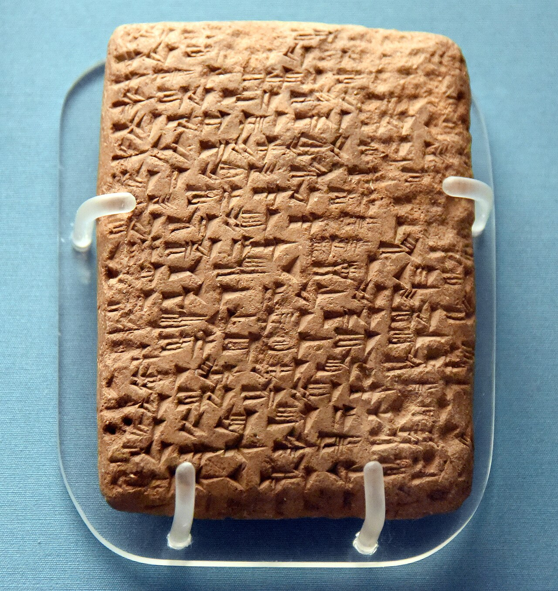

Amarna Letters

- Find Name
- Amarna Letters
- Historical Period
- Bronze Age
- Artifact Date
- c. 1360-1332 BC
- Date Discovered
- 1887
- Discovery Location
- Tell el-Amarna, Egypt
- Current Location
- Vorderasiatisches Museum, Berlin, Germany; British Museum, London; Egyptian Museum, Cairo
- Timeline Era
- Exodus and Wilderness
- Description
- About 380 clay tablets in Akkadian cuneiform, the diplomatic correspondence between Pharaohs Amenhotep III and Akhenaten and the kings of Babylon, Assyria, and the city-states of Canaan. Canaanite rulers plead for Egyptian troops against rivals and against raiders they call Habiru.
- Biblical Significance
- The letters open a window on Canaan just before or around the time many scholars place Israel's entry into the land, naming Jerusalem, Shechem, Megiddo, Lachish, and Hazor and their kings. Whether the Habiru are the Hebrews is debated, but the letters confirm the Bible's picture of a fragmented Canaan of city-states awaiting a new chapter.
- Evidence Class
- Contextual
- Interpretations
- Scholars agree the letters are genuine fourteenth-century diplomatic correspondence; debate centers on the ‘Habiru’ named in them — whether they have any connection to the Hebrews is unproven.
- Scripture Illuminated
- Related People
- Related Books
- Related Places
- Related Events